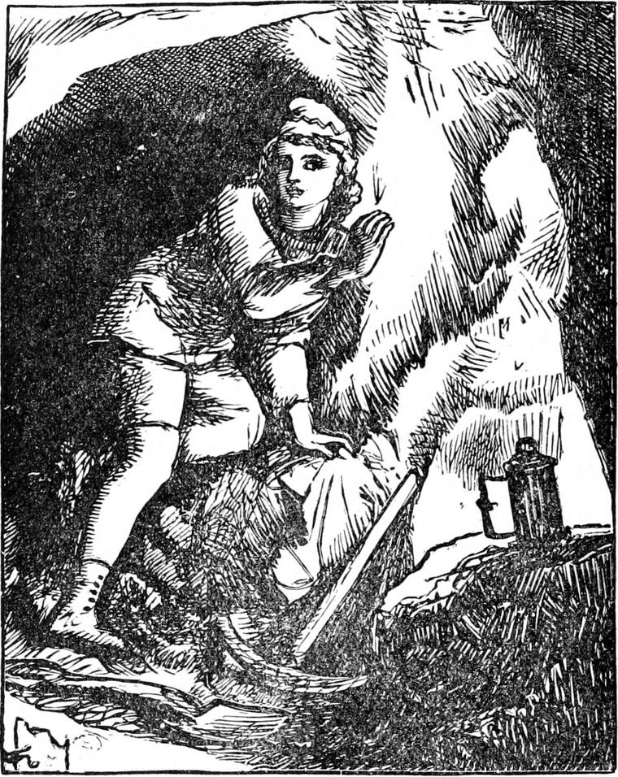
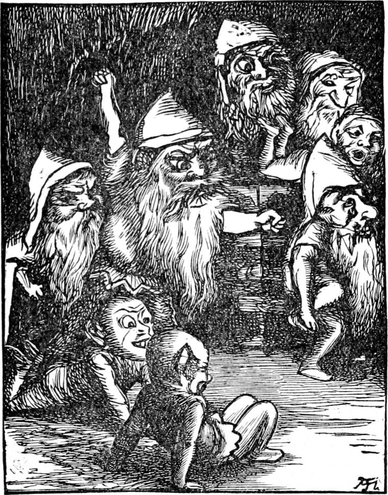

For some time Curdie worked away briskly, throwing all the ore he had disengaged on one side behind him, to be ready for carrying out in the morning. He heard a good deal of goblin-tapping, but it all sounded far away in the hill, and he paid it little heed. Towards midnight he began to feel rather hungry; so he dropped his pickaxe, got out a lump of bread which in the morning he had laid in a damp hole in the rock, sat down on a heap of ore, and ate his supper. Then he leaned back for five minutes' rest before beginning his work again, and laid his head against the rock. He had not kept the position for one minute before he heard something which made him sharpen his ears. It sounded like a voice inside the rock. After a while he heard it again. It was a goblin voice—there could be no doubt about that—and this time he could make out the words.
'Hadn't we better be moving?' it said.
A rougher and deeper voice replied:

'There's no hurry. That wretched little mole won't be through tonight, if he work ever so hard. He's not by any means at the thinnest place.'
'But you still think the lode does come through into our house?' said the first voice.
'Yes, but a good bit farther on than he has got to yet. If he had struck a stroke more to the side just here,' said the goblin, tapping the very stone, as it seemed to Curdie, against which his head lay, 'he would have been through; but he's a couple of yards past it now, and if he follow the lode it will be a week before it leads him in. You see it back there—a long way. Still, perhaps, in case of accident it would be as well to be getting out of this. Helfer, you'll take the great chest. That's your business, you know.'
'Yes, dad,' said a third voice. 'But you must help me to get it on my back. It's awfully heavy, you know.'
'Well, it isn't just a bag of smoke, I admit. But you're as strong as a mountain, Helfer.'
'You say so, dad. I think myself I'm all right. But I could carry ten times as much if it wasn't for my feet.'
'That is your weak point, I confess, my boy.'
'Ain't it yours too, father?'
'Well, to be honest, it's a goblin weakness. Why they come so soft, I declare I haven't an idea.'
'Specially when your head's so hard, you know, father.'
'Yes my boy. The goblin's glory is his head. To think how the fellows up above there have to put on helmets and things when they go fighting! Ha! ha!'
'But why don't we wear shoes like them, father? I should like it—especially when I've got a chest like that on my head.'
'Well, you see, it's not the fashion. The king never wears shoes.'
'The queen does.'
'Yes; but that's for distinction. The first queen, you see—I mean the king's first wife—wore shoes, of course, because she came from upstairs; and so, when she died, the next queen would not be inferior to her as she called it, and would wear shoes too. It was all pride. She is the hardest in forbidding them to the rest of the women.'
'I'm sure I wouldn't wear them—no, not for—that I wouldn't!' said the first voice, which was evidently that of the mother of the family. 'I can't think why either of them should.'
'Didn't I tell you the first was from upstairs?' said the other. 'That was the only silly thing I ever knew His Majesty guilty of. Why should he marry an outlandish woman like that-one of our natural enemies too?'
'I suppose he fell in love with her.'
'Pooh! pooh! He's just as happy now with one of his own people.'
'Did she die very soon? They didn't tease her to death, did they?'
'Oh, dear, no! The king worshipped her very footmarks.'
'What made her die, then? Didn't the air agree with her?'
'She died when the young prince was born.'
'How silly of her! We never do that. It must have been because she wore shoes.'
'I don't know that.'
'Why do they wear shoes up there?'
'Ah, now that's a sensible question, and I will answer it. But in order to do so, I must first tell you a secret. I once saw the queen's feet.'
'Without her shoes?'
'Yes—without her shoes.'
'No! Did you? How was it?'
'Never you mind how it was. She didn't know I saw them. And what do you think!—they had toes!'
'Toes! What's that?'
'You may well ask! I should never have known if I had not seen the queen's feet. Just imagine! the ends of her feet were split up into five or six thin pieces!'
'Oh, horrid! How could the king have fallen in love with her?'
'You forget that she wore shoes. That is just why she wore them. That is why all the men, and women too, upstairs wear shoes. They can't bear the sight of their own feet without them.'
'Ah! now I understand. If ever you wish for shoes again, Helfer, I'll hit your feet—I will.'
'No, no, mother; pray don't.'
'Then don't you.'
'But with such a big box on my head—'
A horrid scream followed, which Curdie interpreted as in reply to a blow from his mother upon the feet of her eldest goblin.
'Well, I never knew so much before!' remarked a fourth voice.
'Your knowledge is not universal quite yet,' said the father. 'You were only fifty last month. Mind you see to the bed and bedding. As soon as we've finished our supper, we'll be up and going. Ha! ha! ha!'

'What are you laughing at, husband?'
'I'm laughing to think what a mess the miners will find themselves in—somewhere before this day ten years.'
'Why, what do you mean?'
'Oh, nothing.'
'Oh, yes, you do mean something. You always do mean something.'
'It's more than you do, then, wife.' 'That may be; but it's not more than I find out, you know.'
'Ha! ha! You're a sharp one. What a mother you've got, Helfer!'
'Yes, father.'
'Well, I suppose I must tell you. They're all at the palace consulting about it tonight; and as soon as we've got away from this thin place I'm going there to hear what night they fix upon. I should like to see that young ruffian there on the other side, struggling in the agonies of—'
He dropped his voice so low that Curdie could hear only a growl. The growl went on in the low bass for a good while, as inarticulate as if the goblin's tongue had been a sausage; and it was not until his wife spoke again that it rose to its former pitch.
'But what shall we do when you are at the palace?' she asked.
'I will see you safe in the new house I've been digging for you for the last two months. Podge, you mind the table and chairs. I commit them to your care. The table has seven legs—each chair three. I shall require them all at your hands.'
After this arose a confused conversation about the various household goods and their transport; and Curdie heard nothing more that was of any importance.
He now knew at least one of the reasons for the constant sound of the goblin hammers and pickaxes at night. They were making new houses for themselves, to which they might retreat when the miners should threaten to break into their dwellings. But he had learned two things of far greater importance. The first was, that some grievous calamity was preparing, and almost ready to fall upon the heads of the miners; the second was—the one weak point of a goblin's body; he had not known that their feet were so tender as he had now reason to suspect. He had heard it said that they had no toes: he had never had opportunity of inspecting them closely enough, in the dusk in which they always appeared, to satisfy himself whether it was a correct report. Indeed, he had not been able even to satisfy himself as to whether they had no fingers, although that also was commonly said to be the fact. One of the miners, indeed, who had had more schooling than the rest, was wont to argue that such must have been the primordial condition of humanity, and that education and handicraft had developed both toes and fingers—with which proposition Curdie had once heard his father sarcastically agree, alleging in support of it the probability that babies' gloves were a traditional remnant of the old state of things; while the stockings of all ages, no regard being paid in them to the toes, pointed in the same direction. But what was of importance was the fact concerning the softness of the goblin feet, which he foresaw might be useful to all miners. What he had to do in the meantime, however, was to discover, if possible, the special evil design the goblins had now in their heads.
Although he knew all the gangs and all the natural galleries with which they communicated in the mined part of the mountain, he had not the least idea where the palace of the king of the gnomes was; otherwise he would have set out at once on the enterprise of discovering what the said design was. He judged, and rightly, that it must lie in a farther part of the mountain, between which and the mine there was as yet no communication. There must be one nearly completed, however; for it could be but a thin partition which now separated them. If only he could get through in time to follow the goblins as they retreated! A few blows would doubtless be sufficient—just where his ear now lay; but if he attempted to strike there with his pickaxe, he would only hasten the departure of the family, put them on their guard, and perhaps lose their involuntary guidance. He therefore began to feel the wall with his hands, and soon found that some of the stones were loose enough to be drawn out with little noise.
Laying hold of a large one with both his hands, he drew it gently out, and let it down softly.
'What was that noise?' said the goblin father.
Curdie blew out his light, lest it should shine through.
'It must be that one miner that stayed behind the rest,' said the mother.
'No; he's been gone a good while. I haven't heard a blow for an hour. Besides, it wasn't like that.'
'Then I suppose it must have been a stone carried down the brook inside.'
'Perhaps. It will have more room by and by.'
Curdie kept quite still. After a little while, hearing nothing but the sounds of their preparations for departure, mingled with an occasional word of direction, and anxious to know whether the removal of the stone had made an opening into the goblins' house, he put in his hand to feel. It went in a good way, and then came in contact with something soft. He had but a moment to feel it over, it was so quickly withdrawn: it was one of the toeless goblin feet. The owner of it gave a cry of fright.
'What's the matter, Helfer?' asked his mother.
'A beast came out of the wall and licked my foot.'
'Nonsense! There are no wild beasts in our country,' said his father.
'But it was, father. I felt it.'
'Nonsense, I say. Will you malign your native realms and reduce them to a level with the country upstairs? That is swarming with wild beasts of every description.'
'But I did feel it, father.'
'I tell you to hold your tongue. You are no patriot.'
Curdie suppressed his laughter, and lay still as a mouse—but no stiller, for every moment he kept nibbling away with his fingers at the edges of the hole. He was slowly making it bigger, for here the rock had been very much shattered with the blasting.
There seemed to be a good many in the family, to judge from the mass of confused talk which now and then came through the hole; but when all were speaking together, and just as if they had bottle-brushes—each at least one—in their throats, it was not easy to make out much that was said. At length he heard once more what the father goblin was saying.
'Now, then,' he said, 'get your bundles on your backs. Here, Helfer, I'll help you up with your chest.'
'I wish it was my chest, father.'
'Your turn will come in good time enough! Make haste. I must go to the meeting at the palace tonight. When that's over, we can come back and clear out the last of the things before our enemies return in the morning. Now light your torches, and come along. What a distinction it is, to provide our own light, instead of being dependent on a thing hung up in the air—a most disagreeable contrivance—intended no doubt to blind us when we venture out under its baleful influence! Quite glaring and vulgar, I call it, though no doubt useful to poor creatures who haven't the wit to make light for themselves.'
Curdie could hardly keep himself from calling through to know whether they made the fire to light their torches by. But a moment's reflection showed him that they would have said they did, inasmuch as they struck two stones together, and the fire came.